Tous ces articles en ligne sur Scilab ont été écrits pour
LINUX MAGAZINE FRANCE par les
développeurs du Scilab Group. Les articles sont sous
licence FDL (Free Documentation
Licence)
De la compilation à la simulation
Dans l'article paru dans le numéro précédent nous
avions vu comment fonctionne l'éditeur graphique de Scicos, dont
l'utilisation permet, par de simples clics de souris, la construction de
systèmes dynamiques sous forme de schéma-blocs. L'article
présenté ici détaille les différentes étapes
necéssaires, de la compilation à la simulation des
schéma-blocs. Nous verrons dans un prochain article, le lien entre les
étapes de la compilation et la génération automatique de
code.
1 Introduction
Dans Scicos la modélisation se traduit par la
représention sous forme de schéma-blocs de modèles de
systèmes dynamiques. Le fonctionnement de ces modèles est obtenu
par l'exécution de la simulation. Celle-ci permet, bien
sûr, de calculer la solution du système dynamique
modélisé, mais aussi d'autres opérations, comme par
exemple la visualisation de signaux (bloc Scope ou MScope) ou
l'enregistrement de leurs valeurs dans un fichier (bloc Writef). Ces
valeurs pouvant ensuite être lues ( bloc Readf) ou
ré-utilisées en post-processing dans Scilab. De la
modélisation à la simulation il y a une phase importante que l'on
appelle la compilation (cf. figure 1). La
compilation consiste à coder les informations graphiques,
architecturales et paramétriques d'un schéma-bloc et surtout
à calculer l'ordre d'appel des blocs (ordonnancement) pendant
la simulation. La compilation d'un schéma-bloc s'exécute, la
première fois d'une manière complète, en deux
étapes par les fonctions Scilab c_pass1 et c_pass2.
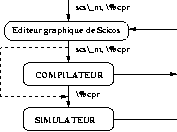
Figure 1: De la modélisation à la simulation
Nous verrons par la suite que lorsque des modifications
sont apportées à postériori au schéma-bloc, selon
le cas, la compilation peut être optimisée.
2 La compilation complète
Lorsqu'un un schéma-bloc est compilé pour la première
fois, ce sont les fonctions c_pass1 et c_pass2 qui sont
exécutées. Afin d'illustrer leur fonctionnement, nous
considérons l'exemple de la figure 2, contenant
7 blocs.
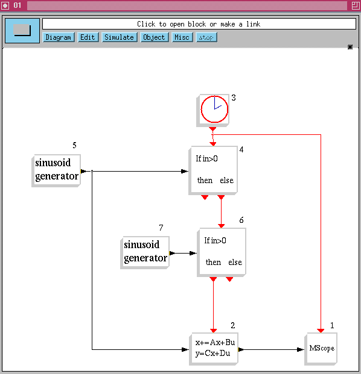
Figure 2: Un système hybride.
2.1 La première étape de compilation
La fonction c_pass1 réalise la
première étape de compilation complète, elle se trouve
dans le fichier /macros/scicos/c_pass1.sci. Son rôle est
d'assurer :
- ·la
vérification de la cohérence entre les paramètres des
ports des blocs reliés (type, taille, ...) ;
- ·la mise à
plat de la hiérarchie des super-blocs, pour n'obtenir qu'un seul niveau
dans l'arborescence des connections ;
- ·la définition
d'une liste des blocs, le résultat obtenu établit une nouvelle
numérotation des blocs ;
- ·la construction des
tables de connections (régulières et d'activations) entre les
blocs.
La syntaxe de la fonction c_pass1 est :
[blklst,cmat,ccmat,cor,corinv,ok]=c_pass1(scs_m,ksup). Ses entrées sont
:
- ·la structure
principale de données du schéma bloc scs_m, qui contient
la succession des structures de données des blocs et des liens
définis par l'éditeur. Si scs_m(k) est un bloc,
scs_m(k)(2) est la structure de donnée graphics du
bloc et scs_m(k)(3) est la structure de donnée model
(cf. numéro 34 de Linux Magazine).
- ·le paramètre
ksup, qui donne l'information sur les éventuels niveaux de
connections existants, en fonction des super-blocs. Par exemple, dans le cas
où un schéma-bloc ne contient aucun super-bloc, il y a un seul
niveau : ksup=0.
Le résultat de la compilation est donné par les sorties de la
fonction c_pass1 : ce sont la liste blklst, les matrices de
connections des ports réguliers cmat et des ports d'activations
ccmat, ainsi que les listes cor et corinv. cor
est une liste dont la structure est identique à la liste scs_m
. Chaque composante contient l'indice du bloc associé dans la liste
blklst. La liste cor contient le chemin d'accès
à la structure contenue dans scs_m, pour chaque numéro
de bloc de la liste blklst. La liste corinv permet
l'opération inverse de cor : à partir du numéro
d'un bloc, on obtient son indice dans la structure principale scs_m.
2.1.1 La liste blklst
blklst est la liste contenant des données
sur chaque bloc, blklst représente une liste de sous-listes.
Dans notre schéma de 7 blocs, blklst contient 7 sous-listes.
Chaque sous-liste correspond au champ model du bloc associé. A
partir des renseignements contenus dans blklst, nous en
déduisons la numérotation des blocs dans la figure 2.
2.1.2 La matrice cmat
cmat est la matrice de connections des ports réguliers. La
première colonne indique le numéro de bloc dont le port de sortie
régulier (numéroté dans la deuxième colonne) est
connecté au bloc numéroté dans la troisième
colonne, par son port d'entrée régulier (numéroté
dans la quatrième colonne). Dans notre exemple nous avons :
cmat=[
| Bloc amont |
Port sortie |
Bloc aval |
Port entree |
| 5 |
1 |
4 |
1 |
| 5 |
1 |
2 |
1 |
| 7 |
1 |
6 |
1 |
| 2 |
1 |
1 |
1 |
]
où la deuxième ligne de la matrice indique que le port de
sortie régulier numéro 1 du bloc numéro 5 est relié
au port d'entrée régulier numéro 1 du bloc numéro
2.
2.1.3 La matrice ccmat
ccmat est la matrice de connections des ports d'activations, la
première colonne indique le numéro de bloc dont le port de sortie
d'activations (numéroté dans la deuxième colonne) est
connecté au bloc numéroté dans la troisième
colonne, par son port d'entrée d'activations (numéroté
dans la quatrième colonne). Ce qui donne dans notre exemple :
ccmat=[
| Bloc amont |
Port sortie |
Bloc aval |
Port entree |
| 3 |
1 |
3 |
1 |
| 3 |
1 |
4 |
1 |
| 3 |
1 |
1 |
1 |
| 4 |
2 |
6 |
1 |
| 6 |
1 |
2 |
1 |
]
La première ligne, de la matrice indique que le port de sortie
d'activation numéro 1 du bloc numéro 3 est relié à
lui même. Il s'agit du bloc Clock qui, en réalité,
est un super-bloc compilé, constitué d'un bloc Delay
bouclé sur lui-même (cf. fig 3). C'est par
une activation initialement programmée qui auto-active le bloc Delay
dès qu'elle est générée, réalisant
ainsi un générateur d'activations.
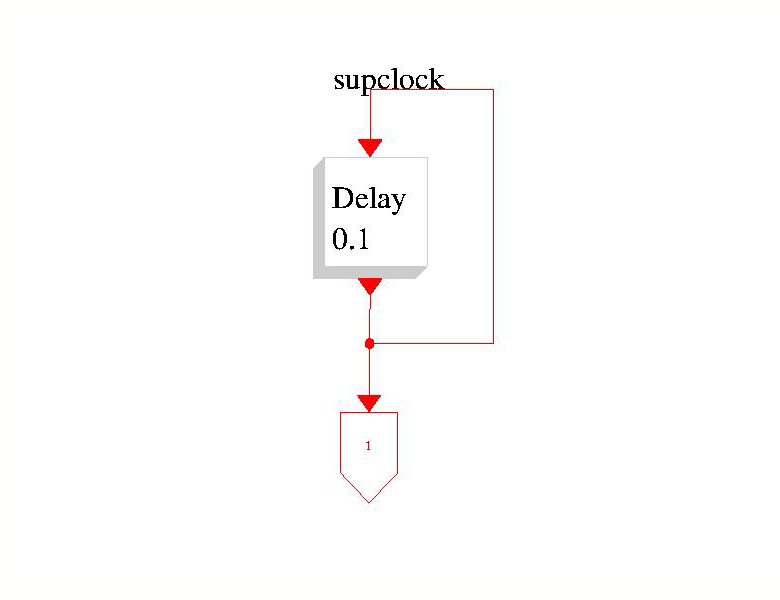
Figure 3: Le bloc Clock.
2.2 La deuxième étape de compilation
L'architecture du schéma bloc étant
codée, il s'agit maintenant, pour l'exécution de la simulation,
de définir un ordonnancement des blocs en fonction de leurs
interactions. Cette tâche est réalisée par la fonction
c_pass2, dans le fichier /macros/scicos/c_pass2.sci. Pour
définir l'ordonnancement c_pass2 exécute principalement
quatres actions.
2.2.1 Garantir le traitement des blocs continus
Dans Scicos, l'activation des blocs continus est assurée par un unique
bloc fictif générant un signal d'activation permanente.
Cependant, comme nous le verrons par la suite (cf. procédure cossim
), dans la simulation l'aspect continu et discret ne sont pas
traités de manière parallèle mais séquentielle.
Ceci signifie que le bloc fictif génère un signal d'activation
qui est toujours actif sauf aux instants d'occurrence des activations
discrètes. Autrement dit, aux instants précis d'activations
discrètes, pour lesquelles l'on traite la simulation du fonctionnement
discret, le fonctionnement continu n'est pas assuré. Ceci pose donc un
problème de garantie du fonctionnement des blocs activés en
continu, pendant la phase d'activation des blocs discrets. C'est la raison pour
laquelle la matrice ccmat doit être modifiée, puisque les
blocs continus sont tous activés par chacune des sources d'activations
discrètes présentes, ce qui correspond à des connections
d'activations supplémentaires (cf. exemple de la figure 4).
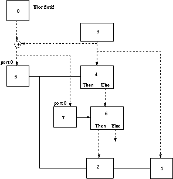
Figure 4: Les modifications apportées à la figure 2
Cette étape garantissant le fonctionnement
continu pendant les activations discrètes est assurée par la
fonction Scilab pak_ersi qui se trouve dans le fichier
c_pass2.sci.
2.2.2 Définir l'héritage des activations
Dans Scicos, lorsqu'un bloc ne possède pas de port d'entrée
d'activation, il hérite de l'activation des signaux sur ses
ports d'entrée régulière. L'héritage des
activations est une facilité graphique dans Scicos qui évite de
surcharger un schéma en liens d'activations : ils sont implicites.
Cependant, pour la compilation, il faut que ces liens soient clairement
définis, y compris ceux concernant l'activation du bloc fictif et
gérés comme pour les autres blocs. L'héritage des
activations est assuré, dans la fonction Scilab pak_ersi, en
partie par la procédure tree4, qui détermine le graphe
de dépendance des blocs héritants, de manière
verticale (pour chaque liaison d'activation existante). Ces graphes de
dépendance servent, dans la fonction pak_ersi (dans le fichier
c_pass2.sci), à rajouter la liaison d'activation manquante sur
chaque bloc héritant. Dans l'exemple de la figure 5,
le bloc 4 est activé par héritage, c'est comme
si on l'avait relié directement par une connection au bloc 1.
2.2.3 Uniformiser les types de blocs
Dans Scicos il existe quatre types de blocs (Standard, Synchro
, Zcross, Memo), différents de par leur
fonctionnement. La différence principale dans le conditionnement de ces
types de blocs, concerne les blocs de type Synchro, pour lesquels les
activations générées sont synchrones avec celles
reçues. Un des aspect important de l'ordonnancement est la
détermination, pour chaque activation (sur un port de sortie), de la
liste des blocs à activer. Afin que la simulation soit performante en
temps, cette liste doit être déterminée au moment de la
compilation (une séquence fixe de numéro des blocs
à activer), plutôt que pendant la phase de simulation une
séquence variable de numéro des blocs à activer).
Dans l'exemple de la figure 5, les activations
sont générées uniquement par le port de sortie du bloc 1,
et donne lieu à la séquence de mise à jour des blocs
suivants : (bloc 2, bloc 3 et bloc 4).
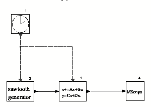
Figure 5: Un exemple sans bloc Synchro
Pendant la compilation, on ne prend pas en compte la
valeur du signal régulier à l'entrée du bloc. Pourtant, la
séquence d'activation des blocs Synchro n'est pas fixe
puisqu'elle dépend de la valeur du signal régulier de leur
entrée. Dans l'exemple de la figure 2,
lorsqu'une activation est générée par le bloc 3, les
séquences liées à son port de sortie d'activations peuvent
être (bloc 5, bloc 7, bloc 4, bloc 1), (bloc 5, bloc 7, bloc
4, bloc 6, bloc 1) ou (bloc 5, bloc 7, bloc 4, bloc 6, bloc 2, bloc 1)
. Pour obtenir, pour chaque sortie d'activations, des séquences
fixes de blocs à activer, nous devons transformer, pendant la phase de
compilation, les blocs Synchro en blocs de type Standard,
ceci dans le strict respect du conditionnement d'origine. Les activations en
sortie d'un bloc Synchro étant exclusives, la modification est
basée sur le principe que, pour un bloc Synchro, l'activation
en entrée est équivalente à l'union des activations de
sortie. La modification consiste à faire la somme (en guise d'union) des
signaux d'activation de tous les ports de sortie du bloc Synchroif then
else (cf. fig 6 et fig 7).
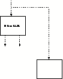
Figure 6: Avant modifications
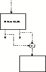
Figure 7: Après modifications
Cette transformation est illustrée, pour notre
exemple de la figure 2, par le schéma de la figure 8 où
tous les blocs sont de type Standard. On peut constater que pour
chaque sortie d'activations il y a une séquence fixe unique :
- pour le port de sortie d'activations du bloc 3 : (bloc 4, bloc 5, bloc
7) ;
- pour le port de sortie d'activations Then du bloc 4 : (bloc
1) ;
- pour le port de sortie d'activations Else du bloc 4 : bloc
6) ;
- pour le port de sortie d'activations Then du bloc 6 : (bloc
2, bloc 1) ;
- pour le port de sortie d'activations Else du bloc 6 : (bloc
1).
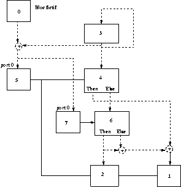
Figure 8: Les modifications sur les blocs Synchro pour la figure 4
Signalons néanmoins que la transformation des
blocs Synchro en blocs Standard ne se résume pas
simplement à faire des modifications sur les connections d'activations.
En effet, dans le cas où un bloc Synchro est activé par
la somme de plusieurs activations d'origine différente (cf.
figure 9), il faut dupliquer le bloc pour permettre un nouveau routage des
liens d'activations. Sur la figure 10, on peut voir que si l'on se
contente de remplacer les connections comme nous l'avons vu
précédemment, pour une activation générée
via la connection ``B'', le bloc ``FOO'' est activé, contrairement
à la configuration de la figure 9 ; le conditionnement qui
résulte de cette transformation est différent du conditionnement
initial. La solution pour résoudre ce problème consiste à
dupliquer le bloc Synchro autant de fois que de connections
d'activations (cf. figure 11).
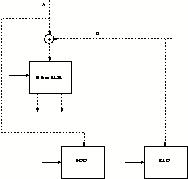
Figure 9: Avant modifications des connections
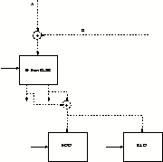
Figure 10: Après modifications des connections
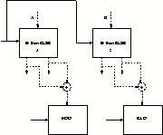
Figure 11: Après duplication du bloc et modifications des connections
Sans pour autant expliquer plus en détail la
réelle complexité de la méthode itérative pour
dupliquer les blocs Synchro, nous allons juste en donner un
aperçu. Prenons, par exemple, le cas où le bloc ``FOO'' est lui
aussi un bloc Synchro ... on voit bien la nécessité de
le dupliquer, car il est conditionné par la somme de deux activations.
Il faut donc effectuer une recherche dans l'arborescence du conditionnement des
blocs Synchro pour déterminer quels sont les blocs à
dupliquer ainsi que le routage des liens d'activations que cela implique. Ces
étapes de transformation sont assurées par la fonction Scilab
paksazi, dans le fichier c_pass2.sci.
2.2.4 Détermination des graphes de dépendance
Il s'agit de déterminer le graphe de dépendance des blocs
associés à chaque sortie d'activation. En effet, un
schéma bloc constitue un graphe d'ordre total, dans lequel la
dépendance de conditionnement s'exprime suivant la nature des blocs, par
des graphes d'ordre partiel. Ces graphes d'ordre partiel traduisent des arbres
de dépendances et sont obtenus par des procédures (fortran), qui
exécutent des algorithmes de calcul pour différents types
d'informations :
- ·la procédure
tree2, pour les blocs activés en continu (par le bloc fictif),
détermine l'arbre de dépendance pour :
- les blocs générateur de constante, à activer
une seule fois à l'initialisation (leur valeur de sortie restant
constante) ;
- les blocs continu, sans état continu ;
- les blocs continu, avec état continu ;
- les blocs continu, de type Zcross.
- ·la procédure
tree3, détermine l'arbre de dépendance pour les blocs de
type Synchro et Memo, dans le but de détecter
d'éventuelles boucles algébriques.
- ·la procédure
tree4, détermine l'arbre de dépendance pour les blocs
héritants des activations de leur(s) entrée(s).
Bien entendu, ces arbres de dépendance prennent en compte (s'il y a
lieu) de la dépendance directe de l'entrée des blocs sur leur
sortie pour déterminer un ordre dans le conditionnement des blocs,
en fonction de chaque sortie d'activation associée.
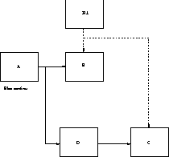
Figure 12: Un exemple simple de relation d'ordre entre les blocs
L'exemple simple de la figure 12 montre bien que le
bloc ``D'' hérite (procédure tree4) de l'activation
continue conditionnant le bloc ``A''. Pour une activation
générée par le bloc fictif, la relation d'ordre des
blocs associés (``A'' et ``D''), impose que le bloc ``A'' soit mis
à jour avant (procédure tree2) le bloc ``D''. En
revanche, pour une activation générée par le bloc ``H 1'',
il n'y a pas de relation d'ordre stricte pour les blocs associés (``B''
et ``C''). La fonction scheduler établie, à l'aide des
procédures tree2 et tree3 les tables d'ordonnancement
des blocs : ordptr, ordclk, cord, iord, oord, zord (cf.
tableau 1), qui définissent la relation d'ordre entre les blocs,
associés à chaque sortie d'activation.
| Noms |
Type |
|
| des |
de |
Descriptif |
| tables |
fonctionnement |
|
| iord |
activé à |
matrice à deux colonnes, la
première indiquant les blocs |
| |
l'initialisation |
générant une valeur constante,
dépendant de cette constante |
| |
|
(cf. Note) ou activés par le bloc
fictif, la deuxième indiquant, |
| |
|
par un codage binaire, le port par lequel le
bloc est activé |
| cord |
continu |
matrice à deux colonnes, la
première indiquant les blocs |
| |
|
activés en continu par le bloc
fictif, la deuxième indiquant, |
| |
|
par un codage binaire, le port par lequel le
bloc est activé |
| oord |
continu |
sous-ensemble de cord, c'est une matrice
à deux colonnes : |
| |
|
la première indiquant les blocs pour
lesquels est calculée |
| |
|
la dérivée de l'état
continu, la deuxième indiquant |
| |
|
par un codage binaire, le port par lequel le
bloc est activé |
| zord |
continu |
sous-ensemble de cord, c'est une matrice
à deux colonnes : |
| |
|
la première indiquant les blocs dont
la sortie affecte le calcul |
| |
|
des surfaces traversée par
zéro, la deuxième indiquant |
| |
|
par un codage binaire, le port par lequel le
bloc est activé |
| ordptr |
par activation |
vecteur de pointeurs vers la matrice
ordclk, indiquant la partie |
| |
|
de la matrice ordclk correspondant
à chaque source d'activation |
| ordclk |
par activation |
matrice à deux colonnes, la
première indiquant les blocs à mettre |
| |
|
à jour, selon l'activation
pointée par ordptr, la deuxième indiquant, |
| |
|
par un codage binaire, le port par lequel le
bloc est activé. |
| |
Table 1: Les tables d'ordonnancement pour la mise à jour des blocs
Note concernant iord (dans le tableau 1) :
Les blocs qui génèrent une valeur constante sont
définis comme n'ayant ni entrée régulière, ni
entrée d'activation, ni sortie d'activation, et ne sont pas
déclarés activés en continu. On considère que ces
blocs sont activés par un seul événement fictif lors de
l'initialisation ou au re-démarrage de la phase de simulation. Un statut
particulier à été défini pour ces blocs, pour
éviter de re-calculer leurs mises à jour inutilement pendant la
simulation. Il en va de même pour les blocs qui dépendent de
générateur de constante (cf. figure 13) : ce qui met en évidence un
certain nombre de blocs à activer et dans un ordre précis.
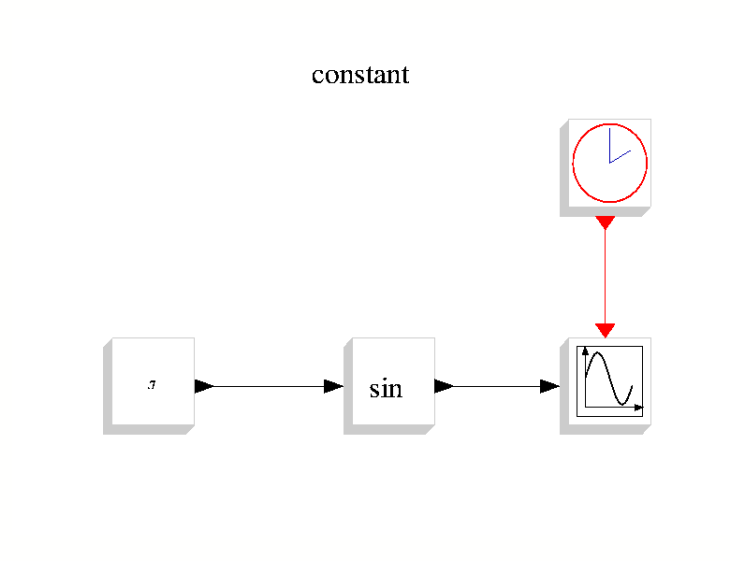
Figure 13: Le bloc sin dépend d'une valeur constante.
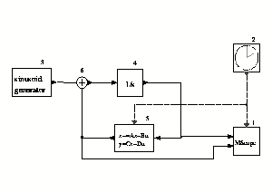
Figure 14: Un autre système hybride.
Concrètement, avec l'exemple du schéma de
la figure 14, les informations contenues dans ces tables indiquent :
Les blocs 3 et 4 sont activés en permanence (par le bloc fictif). Le
port d'entrée numéro 2 du bloc 6 hérite de la sortie du
bloc 3. Et pour les mêmes raisons, nous avons :
La matrice zord est vide, puisque le schéma bloc ne contient
pas de bloc de type ``z''.
Notre exemple contient deux sources d'activation : le bloc fictif (qui active
les blocs continus sinusoid generator et 1/s) et la source
d'activation discrète. Le vecteur ordptr est composé de
deux valeurs qui pointent la zone affectée par la source d'activation
discrète de la matrice ordclk (de la ligne 1 à la ligne
7). Les blocs contenus dans cette zone sont activés par la source
d'activation discrète.
La première ligne de ordclk indique que la sortie du bloc 2 est
reliée à son entrée. Les deuxième et
troisième lignes concernent le synchronisme du bloc fictif avec le bloc
2. Ainsi le bloc 6, héritant des activations de ses entrées, la
dernière ligne indique le port 3 (activation des deux entrées du
bloc 6) au lieu d'indiquer le port 1 du bloc 6 (activation de l'entrée
reliée au bloc 5).
2.2.5 La liste %cpr
La syntaxe de la fonction c_pass2 est la suivante :
%cpr=c_pass2(bllst,connectmat,clkconnect,cor,corinv)
La liste %cpr est le résultat de compilation d'un
schéma-bloc, mais ne contient pas les informations sur la topologie, la
couleur, la forme etc... des blocs car non utiles pour la simulation. Ces
informations ne sont donc pas prises en compte dans la fonction c_pass2
. %cpr est constitué de quatre structures de
paramètres : state, sim, cor et corinv
. state est une liste typée (tlist) qui contient
l'information sur les états initiaux suivants :
- state("x") : le vecteur d'état continu
- state("z") : le vecteur d'état discret
- state("outtb") : le vecteur des valeurs initiales
d'entrées et sorties
- state("tevts") : cf. l'agenda de programmation
des activations
- state("evtspt") : cf. l'agenda de
programmation des activations
- state("pointi") : cf. l'agenda de
programmation des activations.
Le contenu de state évolue pendant la simulation mais à
la sortie de la fonction scicossim on mémorise le contenu final
pour permettre l'exploitation du résultat de la simulation, notamment
lors d'une éventuelle reprise du cours d'une simulation interrompue.
sim contient des informations figées dans le temps, obtenues
après compilation par la fonction c_pass2 :
- sim("rpar") : le vecteur des paramètres
réels (double précision) des blocs
- sim("funs") : le vecteur de chaines de
caractères indiquant le nom de la fonction de simulation pour chaque
bloc.
- sim("zptr") : le vecteur d'entiers avec
state("z")(zptr(i):(zptr(i+1)-1)) qui indique le vecteur
d'état discret du ième bloc
- sim("xptr") : le vecteur d'entiers avec
state("x")(xptr(i):(xptr(i+1)-1)) qui indique le vecteur
d'état continu du ième bloc.
- et autres, comme par exemple, oord, cord, zord,
etc...
La structure de données %cpr est fournie en entrée de la
fonction scicossim qui exécute les différentes
étapes de la simulation.
Remarque sur l'optimisation de la compilation
Lorsqu'un schéma-bloc a été préalablement
compilé, et si par la suite des modifications mineures sont
effectuées (changements de paramètres, de la tailles des
entrée et sorties ...), sans induire de modifications sur
l'ordonnancement, il n'est pas nécessaire d'exécuter une
compilation complète. Dans ce cas, on effectue une compilation
optimisée, à des degrés différents (cf.
figure 15).
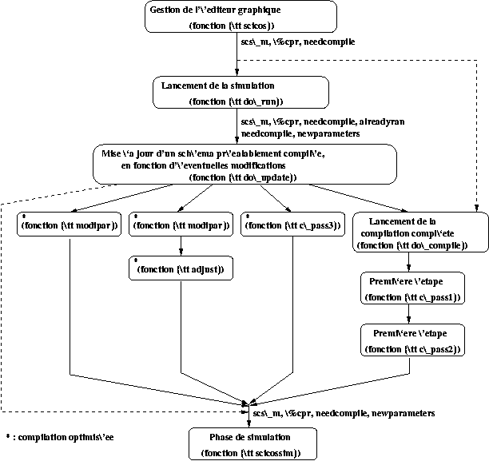
Figure 15: Les étapes de compilation
On utilise le paramètre (booléen)
modified, dont la valeur indique si les modifications concernent
certaines caractéristiques des blocs :
- le nom ou le type de la fonction de simulation,
- les états continu ou discret,
- les paramètres réels et entiers.
On utilise aussi le paramètre newparameters dont la valeur
indique si les modifications concernent des blocs contenus dans un super-bloc
(compilé ou non). C'est avec la valeur du paramètre
needcompile que l'on détermine si les modifications impliquent
une nouvelle compilation et si l'on doit informer l'utilisateur, d'un message
pour enregistrer les modifications avant de fermer le fichier contenant le
schéma. Le lancement d'une simulation (fonction do_run) passe
par une prise en compte d'éventuels changements dans le
schéma-bloc (fonction do_update). En fonction de la valeur de
needcompile, la compilation est optimisée ou complète.
Les paramètres needcompile et modified sont nuls et la
liste newparameters est vide. Dans ce cas, il n'y a aucune
re-compilation et la fonction scicossim gère les étapes
de simulation (cf. par la suite). Signalons dans la fonction do_run,
le paramètre alreadyran qui est utilisé pour
arrêter et reprendre une simulation en cours. Il existe quatre
degrés de compilation :
- ·premier
degré : seuls des paramètres de blocs ont été
modifiés (fonction modipar)
- ·second
degré : des paramètres ont été modifiés
et/ou la taille des ports de certains blocs a changée (fonctions
modipar et adjust).
- ·troisième
degré : suite à des modifications, la taille effective des
ports d'entrée et sortie des blocs doit être
déterminée, il s'agit d'une compilation partielle (fonction
c_pass3).
- ·quatrième
degré : c'est la compilation complète, en deux étapes
(fonctions c_pass1 et c_pass2).
3 La simulation
Le schéma de la figure 16 montre les
différentes étapes de la simulation. Elles sont
exécutées par des procédures écrites en Fortran
(plus rapide qu'en langage Scilab). Dès que l'utilisateur lance une
simulation, les deux procédures intcos et scicos sont
appelées successivement. intcos gère l'interface entre
les programmes du simulateur (procédure scicos) et la gestion
de la mémoire dans Scilab. scicos appelle les 3
procédures : cosini, cossim, cosend pour, respectivement,
initialiser, exécuter et clore la simulation.
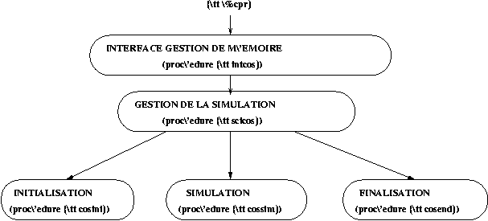
Figure 16: La simulation dans Scicos
Pour bien comprendre le fonctionnement de la simulation il
faut distinguer les activations conditionnées
(générées par les blocs de type Synchro) et les
activations originales (générées par les autres
types de bloc). Signalons que, même si les blocs Synchro ont
été transformés, lors de la compilation, en blocs de type
Standard, l'information sur le type de bloc subsiste néanmoins
pour la simulation. En effet, c'est précisément pendant la
procédure cossim que sont gérées prioritairement,
dans l'agenda de programmation des activations, les activations
conditionnées.
3.1 La procédure cosini
Cette procédure réalise la phase
d'initialisation de la simulation par un appel à tous les blocs avec
flag 4 (cf. numéro 19 de Linux Magazine), pour initialiser les
entrées et sorties régulières et les registres des temps
d'activation de sortie (tvec). Un appel de cosini à
tous les blocs avec flag 6 correspond à une ré-initialisation.
Signalons que les activations existantes à l'initialisation sont
exclusivement originales.
3.2 La procédure cossim
L'essentiel de la simulation est assuré par la
procédure cossim, dans laquelle le temps évolue soit en
fonction du solveur ODE (temps continu), soit en fonction des
événements (activations ponctuelles) programmés dans
l'agenda (temps discret).
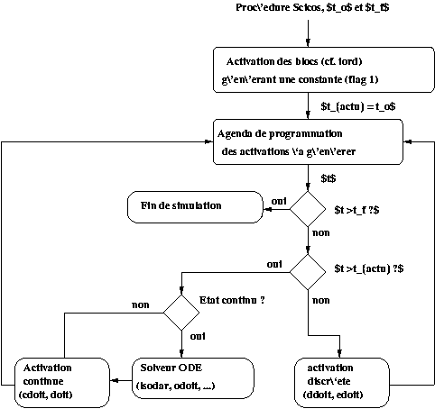
Figure 17: La procédure cossim
Le fonctionnement de la procédure cossim
est illustrée par le schéma de la figure 17. cossim gère les appels à
différentes procédures permettant la mise à jour des
blocs, selon que l'activation reçue soit continue ou
discrète et en fonction du type de bloc :
- ·lorsque une
activation est générée par le bloc fictif, elle est
continue et
- soit elle active un bloc avec état continu, cossim appelle
le solveur ODE (Equations Différentielles
Ordinaires) pour les calculs d'intégration liés à
l'état continu des blocs (flag 0). En fait pour la simulation, chacun
des registres d'état continu des blocs constitue une partie d'un unique
registre d'état continu pour le système. Ce qui permet de mettre
à jour, pendant la simulation, tous les état continus en
même temps.
- soit elle active un bloc sans état continu, cossim appelle
la procédure cdoit qui met à jour les sorties
régulières et d'activations (respectivement avec flag 1 et 3). Si
le bloc activé est de type Synchro, cdoit appelle la
procédure doit pour générer les activations
conditionnées, associées à tous les blocs Synchro
correspondants. A la fin de la procédure cdoit, toutes les
éventuelles activations conditionnées ont été
générées avant de retourner dans la procédure
cossim.
- ·lorsque une
activation (originale) est générée par un bloc discret,
elle est discrète. cossim appelle la procédure
ddoit qui met à jour les blocs discrets avec ou sans
état discret, en fonction de l'occurrence des activations reçues.
Les sorties régulières et d'activations sont mises à jour
(respectivement par flag 1 et 3) avant les états discrets (par flag 2).
Si le bloc activé est de type Synchro, ddoit appelle
la procédure edoit pour générer les activations
conditionnées, associées à tous les blocs Synchro
correspondants. A la fin de la procédure ddoit, toutes les
éventuelles activations conditionnées ont été
générées avant de retourner dans la procédure
cossim.
3.2.1 Le solveur ODE
Le solveur ODE est un programme d'intégration numérique
des équations différentielles du schéma, permettant de
faire progresser le temps continu d'un pas et donnant la valeur de
l'état à ce nouvel instant. Le pas est calculé de
manière interne et variable (suivant les calculs d'intégration)
par la procédure lsodar. Cette dernière est aussi
utilisée pour les calculs liés à la détection
de traversée de zéro.
L'évolution du temps continu
Les calculs liés à l'évolution du temps nécessite
de fournir à la procédure lsodar, la
dérivée de l'état continu du système à
simuler. Cette dérivée est un vecteur fournit par la
procédure simblk et composé de la dérivée
de chaque bloc concerné. Cette dérivée est en fonction de
l'état continu du bloc et de la valeur du signal en entrée du
bloc. La procédure simblk permet de réaliser une
interface entre le format de la procédure lsodar et celui de la
procédure odoit. La procédure odoit est
utilisée pour calculer la valeur de l'entrée des blocs ayant un
état continu. Cette procédure fait appel à la
procédure oodoit, qui assure sa récursivité pour
les calculs impliquant des blocs de type Synchro.
La détection de traversée de zéro
Les calculs liés à la détection de traversée de
zéro nécessite de fournir à la procédure lsodar
, une fonction (y=f(x,t)) qui retourne les
valeurs de l'état continu du système à simuler. x
est l'état continu, t est le temps continu et y est un
vecteur dont le nombre d'éléments est fonction du nombre de blocs
de type Zcross à simuler. y est le vecteur des valeurs
d'équations de surface qui indique une position par rapport à la
dérivée de l'état continu. La détection de
traversée de zéro pour l'ensemble des blocs de type Zcross
d'un système est considérée comme un ensemble de
surfaces. La valeur des éléments de y varie entre trois
possibilités : positive au dessus du seuil, négative en dessous
et nulle sur le seuil. C'est la procédure grblk qui fournit
l'équation y=f(x,t) à la
procédure lsodar. Si l'un des élément de la
fonction y=f(x,t) change de signe, la
procédure lsodar engage une dichotomie du pas de temps avant et
après la détection de traversée de zéro, de
manière à détecter le bloc concerné et
déterminer la date exacte du changement de signe. Il est à noter
que dans le cas particulier de détection de traversée de
zéro pris à l'instant ``zéro'' même, la
procédure lsodar se lance dans des calculs d'intégration
particulièrement longs, tant et si bien que la simulation s'en trouve
considérablement ralentie. Pour pallier ce problème il est
nécessaire de faire avancer le temps d'intégration à
l'instant suivant de manière à reprendre les calculs
d'intégration, cette fois-ci avec la procédure lsoda. La
procédure lsoda est adaptée uniquement aux blocs de type
Zcross. Nul besoin est de reprendre plus d'une fois cette tentative de
décalage du temps d'intégration, car si elle échoue : il
s'agit réellement d'un problème d'intégration plus
complexe. Dans ce cas la simulation est arrêtée et un message
d'erreur invite l'utilisateur à faire des modifications dans le
schéma-bloc. La procédure grblk permet de
réaliser une interface entre le format de la procédure lsodar
et celui de la procédure zdoit. La procédure
zdoit est utilisée pour calculer la valeur de l'entrée
des blocs de type Zcross. Cette procédure fait appel à
la procédure zzdoit, qui assure sa récursivité
pour les calculs impliquant des blocs de type Synchro.
3.2.2 L'agenda
Pendant la simulation, les événements sont programmés dans
un agenda définit lors de la phase de compilation. Cet
agenda est composé de deux vecteurs. Le premier (evtspt
) est un vecteur d'entiers indiquant le numéro du port
générant une activation. Si un événement i
est la prochaine activation à programmer, evtspt(i)
contient le numéro du port de sortie d'activation correspondant (ou
zéro s'il n'y a aucun autre événement programmé).
La date d'occurrence de cet événement est stockée dans le
second vecteur, tevts(i) (cf. figure 18). La taille des vecteurs evtspt et tevts
correspond au nombre de ports de sortie d'activation existants dans le
schéma bloc. A la fin de la compilation, le vecteur evtspt
contient le numéro de port des blocs devant générer les
activations pré-programmées.
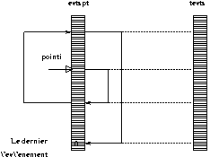
Figure 18: L'agenda est composé de deux vecteurs.
Le numéro du port de sortie d'activation du
prochain événement à générer est
stocké dans la variable pointi. Pendant la simulation, la
programmation des activations dans l' agenda dépend de deux
procédures : addevs et putevs. Le rôle de
addevs est spécifique aux blocs discrets (hormis les blocs
Synchro), il consiste à rechercher le bon emplacement dans
l'agenda pour programmer l'activation à générer (non
synchrone avec l'activation causale). La procédure putevs
permet de traiter prioritairement (à l'itération courante)
l'activation à générer en sortie des blocs Synchro
concernés. L'activation n'est pas programmée dans l'agenda
car elle doit être synchrone avec l'activation causale. Il n'existe pas
dans l'agenda d'activations conditionnées qui soient programmées.
3.3 La procédure cosend
La procédure cosend permet de mettre à zéro, avec
flag 5, le registre des temps d'activations tvec de chaque bloc afin
de terminer la simulation. Ceci correspond à une procédure
d'arrêt, qui prend toute sa signification par exemple pour les blocs
Writef (écriture sur fichier) qu'il est nécessaire de fermer
en écriture, pour valider leur contenu. Rachid Djenidi
Scilab Group
scilab@inria.fr
http://www-rocq.inria.fr/scilab/
This document was translated from LATEX
by HEVEA.